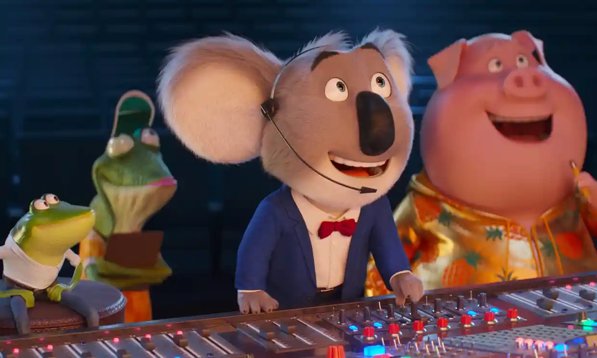

Buster Moon & the Gang, voiced by an all-star cast, try to go big in showbiz, but are met by obsticles.
Sing 2 Review: OK story, great tunes
Plot Summary
The little, local theater is not enough for Buster Moon, voiced by Matthew McConaughey. He and the team: Meena (Tori Kelly), Rosita (Reese Witherspoon), Johnny (Taron Egerton), Ash (Scarlet Johansson), Gunter (Nick Kroll), and Mr. Moon's trusty, century-old assistant, Miss Crawly (Garth Jennings), try to go big in showbusiness. When an entertainment company's agent turns them down, they go to Redshore city, a mix between Los Angeles and Las Vegas, to persuade the manager in person.
The team get a deal, but with one condition, they must get Clay Calloway (Bono) out of retirement and into the show. Full plot summary here
The official trailer:
Tunes
The sequel to Sing, Sing 2 includes many songs. 19 to be precise, which is a lot for a 2-hour movie. Some of the most popular include Your Song Saved my Life by U2, I Still Haven't Found What I'm Looking For by Bono and Bad Guy by Billie Eilish.
The songs are really well integrated into the story and overall movie. All of the songs are performed by the original cast. Sometimes, in my opinion, the Sing 2 covers of songs are better than the original. The movie is so packed with songs, that it may obstruct the story for some viewers. The cast bring new energy to all of the songs and make the movie more lively
The songs in Sing 2 are:
| Title | Performer | Original Artist |
|---|---|---|
| Your Song Saved My Life (from Sing 2) | U2 (original recording) | U2 |
| Let's Go Crazy | Tori Kelly (as Meena), Taron Egerton (as Johnny), Reese Witherspoon (as Rosita), Nick Kroll (as Gunter) | Prince & The Revolution |
| Can't Feel My Face | Kiana Ledé (as The Bunnies) | The Weekend |
| Goodbye Yellow Brick Road | Elton John (original recording) | Elton John |
| Heads Will Roll | Scarlett Johansson (as Ash) | Yeah Yeah Yeahs |
| Holes | Mercury Rev (original recording) | Mercury Rev |
| Bad Guy | Billie Eilish (original recording) | Billie Eilish |
| Sing 2 Audition Medley (auditions) | Cast | Many |
| Where the Steets Have No Name | Tori Kelly (as Meena), Taron Egerton (as Johnny), Reese Witherspoon (as Rosita), Nick Kroll (as Gunter), Scarlett Johansson (as Ash), | U2 |
| Higher Love | Kygo, Whitney Houston (original recording) | Kygo, Whitney Houston |
| There's Nothing Holdin' me Back | Tori Kelly, Taron Egerton (as Johnny) | Shawn Mendes |
| Suéltate (from Sing 2) | Sam i, Anitta, BIA, Jarina De Marco (original recording) | Sam i, Anitta, BIA, Jarina De Marco |
| Stuck In a Moment You Can't Get Out Of | Scarlett Johansson (as Ash) | U2 |
| Soy Yo (Sing 2 mix) | Bomba Estéreo (original recording) | Bomba Estéreo |
| A Sky Full Of Stars | Taron Egerton (as Johnny) | Coldplay, Avicii |
| Could Have Been Me | Halsey (as Porsha) | The Struts |
| I Say a Little Prayer | Tori Kelly (as Meena), Pharrell Williams (as Alfonso) | Aretha Franklin |
| Break Free | Reese Witherspoon (as Rosita), Nick Kroll (as Gunter) | Ariana Grande (ft. Zedd) |
| I Still Haven't Found What I'm Lokking For | Scarlett Johansson (as Ash), Bono (as Clay Calloway) | U2 |
| Tippy Toes (bonus track) | Adam Buxton, Fancy Feelings, DSCOSTU (original recording) | Adam Buxton, Fancy Feelings, DSCOSTU |
| Christmas (Baby Please Come Home) (bonus track) | Keke Palmer, Tori Kelly (as Meena), Taron Egerton (as Johnny), Reese Witherspoon (as Rosita), Scarlett Johansson (as Ash) | Original Recording |
Verdict
Sing 2 is a great family movie, with many songs. The stroy could get improvement, but combined with the songs, the movie will seem seamless. Sing 2 has more songs than any in-depth morale, but if you enjoyed Sing, then chances are that you will enjoy the second as well!
Info taken from IMDb, IGN, Wikipedia and other sites.